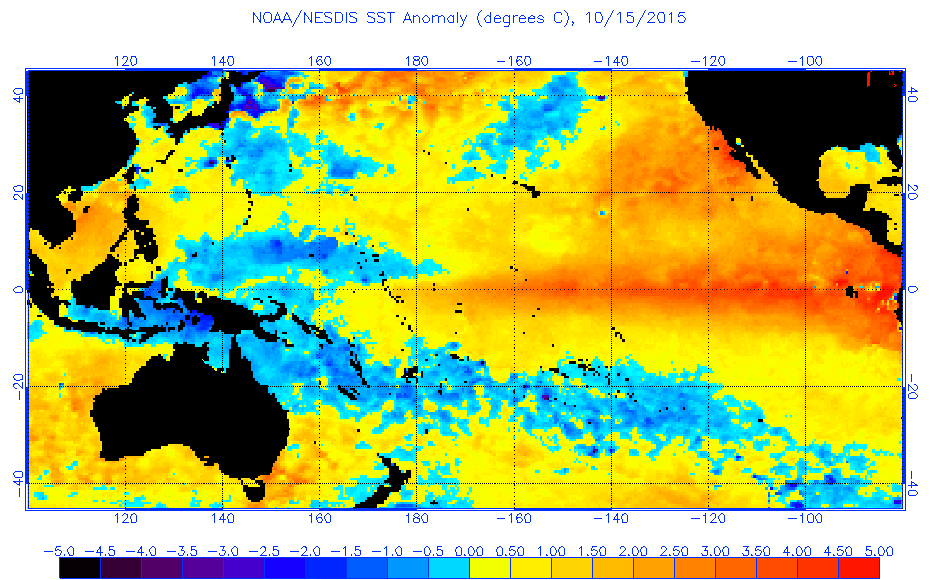
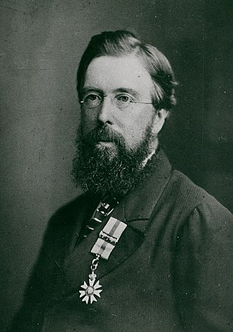

Introducción
El fenómeno El Niño (FEN), o simplemente El Niño, es un fenómeno o evento de origen climático relacionado con el calentamiento del océano Pacífico oriental ecuatorial, el cual se manifiesta erráticamente cíclico —Arthur Strahler habla de ciclos de entre tres y ocho años, que consiste en realidad en la fase cálida del patrón climático del Pacífico ecuatorial denominado El Niño-Oscilación del Sur o ENOS (El Niño-Southern Oscillation, ENSO por sus siglas en inglés), donde la fase de enfriamiento recibe el nombre de La Niña.
Historia
Charles Todd, en 1888, sugirió que las sequías en India y en Australia tendían a ocurrir al mismo tiempo; Norman Lockyer observó lo mismo en 1904. Víctor Eguiguren Escudero (1852–1919) informó de una conexión entre El Niño y las inundaciones de 1894 y en 1895 Federico Alfonso Pezet (1859–1929) hizo lo propio. En 1924, Gilbert Walker (por quien la circulación Walker se nombró) acuñó el término "Oscilación Sur". Él y otros (incluyendo al meteorólogo noruego-estadounidense Jacob Bjerknes) se acreditan en haber identificado el efecto El Niño.
"Payta es una ciudad pequeña de la Provincia y Corregimiento de Piura del Perú, situada en la Costa de la mar del Sur... donde se desembarca para pasar por tierra a Lima y demás Provincias del Perú. La población está situada en un terreno arenisco que no produce yerva alguna, ni una sola gota de agua dulce [...] En Payta nunca llueve, y habiendo sucedido el fenómeno raro de llover en 1728, donde se arruinó la mayor parte."
Caracteristicas
Los principales efectos de dicho fenómeno son la altura de las temperaturas del océano así como una directa afectación que se ve variada según la zona de pacífico. Este fenómeno puede afectar especialmente la corriente en chorro, una banda estrecha de viento fuerte en la atmósfera superior, sobre el Pacífico, que se vuelve más fuerte y arroja tormentas más frecuentes e intensas sobre el oeste de EE. UU., especialmente California, y a lo largo de la costa oeste de América del Sur. Pero la atmósfera es algo así como un juego de suma cero. Más lluvia en América del Norte y del Sur se produce a expensas del sur de Asia y Australia, normalmente lluviosos, que se vuelven anormalmente secos y experimentan sequías.
Se sabe que El Niño ha causado intensas inundaciones en las secciones orientales de África, lo que ha provocado deslizamientos de tierra, un aumento de las enfermedades transmitidas por el agua e incluso escasez de alimentos, mientras que las partes norte y sur del continente experimentan sequías graves. Un El Niño fuerte también influye en las temporadas de ciclones en todo el planeta. Cuanto más cálido es el Pacífico, más huracanes o tifones recibe, mientras que se forman menos huracanes en el océano Atlántico porque el aumento de los vientos en los niveles superiores impide que se desarrollen. Esto sucedió durante la temporada de huracanes de 2015, con el Pacífico rompiendo récords mientras que el Atlántico experimentó un año relativamente tranquilo.
Video relacionado
Mediciones
El Índice Oceánico de El Niño (ONI, por sus siglas en inglés) se ha convertido en el estándar de facto que utiliza la NOAA para clasificar los eventos de El Niño (cálido) y La Niña (frío) en el Pacífico tropical oriental. Es la media móvil de 3 meses del promedio de anomalías de la temperatura superficial del mar (SST) en la región Niño 3.4 (es decir, 5°N-5°S, 120°-170°O). Los eventos se definen como 5 periodos consecutivos de 3 meses superpuestos, con una anomalía de +0.5° o más para los eventos cálidos (El Niño) y de -0.5° o menos para los eventos fríos (La Niña). El umbral se clasifica además en eventos Débiles (con una anomalía de SST entre 0.5 y 0.9), Moderados (1.0 a 1.4), Fuertes (1.5 a 1.9) y Muy Fuertes (≥ 2.0). Para los fines de este informe, un evento debe haber alcanzado o superado el umbral de la categoría más alta durante al menos 3 periodos consecutivos de 3 meses superpuestos para ser categorizado como débil, moderado, fuerte o muy fuerte.
| El Niño - 27 | La Niña - 25 | |||||
|---|---|---|---|---|---|---|
| Debil - 11 | Moderado - 7 | Fuerte - 6 | Muy Fuerte - 3 | Debil - 12 | Moderado - 6 | Fuerte - 7 |
| 1952-53 | 1951-52 | 1957-58 | 1982-83 | 1954-55 | 1955-56 | 1973-74 |
| 1953-54 | 1963-64 | 1965-66 | 1997-98 | 1964-65 | 1970-71 | 1975-76 |
| 1958-59 | 1968-69 | 1972-73 | 2015-16 | 1971-72 | 1995-96 | 1988-89 |
| 1969-70 | 1986-87 | 1987-88 | 1974-75 | 2011-12 | 1998-99 | |
| 1976-77 | 1994-95 | 1991-92 | 1983-84 | 2020-21 | 1999-00 | |
| 1977-78 | 2002-03 | 2023-24 | 1984-85 | 2021-22 | 2007-08 | |
| 1979-80 | 2009-10 | 2000-01 | 2010-11 | |||
| 2004-05 | 2005-06 | |||||
| 2006-07 | 2008-09 | |||||
| 2014-15 | 2016-17 | |||||
| 2018-19 | 2017-18 | |||||
| 2022-23 | ||||||